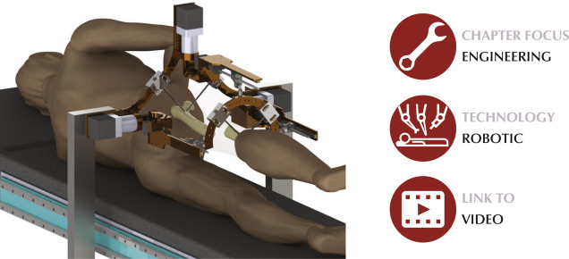

Robossis is a cutting-edge surgical robotics platform specifically designed to improve outcomes in femur fracture surgeries. Traditional procedures for femur fracture realignment often rely heavily on the surgeon's experience and manual dexterity, which can lead to variability in outcomes, especially in complex cases involving multiple fragments or significant soft tissue damage. Robossis addresses these challenges by introducing a robotic system that integrates precision, stability, and feedback mechanisms to assist surgeons during operations. At the heart of the Robossis system is its 6 Degrees of Freedom (DOF) architecture, which includes three translational axes (X, Y, Z) and three rotational axes (alpha, beta, gamma). This design provides unparalleled flexibility and precision, enabling the robot to adjust to complex fracture geometries and deliver optimal alignment. The system incorporates a haptic feedback controller, which is critical for maintaining surgical safety. The haptic feedback ensures the surgeon receives real-time sensory input, preventing excessive forces that could damage soft tissues while maintaining control over the robot's powerful capabilities. Robossis transforms femur fracture surgeries by combining robotics and human expertise. By integrating advanced pathfinding algorithms like the modified A*, surgeons can navigate intricate fracture patterns with confidence. This system improves surgical accuracy, reduces operating times, and minimizes post-operative complications such as improper alignment or tissue damage. With Robossis, surgeons are empowered to achieve outcomes that were previously unattainable through manual methods alone, paving the way for enhanced patient recovery and reduced healthcare costs. In summary, Robossis represents the future of orthopedic surgery, bridging the gap between precision robotics and skilled surgical practice to deliver safer, more effective, and more reliable treatments for femur fractures.
The modified A* algorithm used in the Robossis surgical robot is an advanced pathfinding approach tailored to the unique challenges of femur fracture realignment. Unlike standard A*, which operates in 2D or 3D spaces, this version integrates 6 Degrees of Freedom (DOF)—three translational (X, Y, Z) and three rotational (alpha, beta, gamma)—to ensure precise alignment in a complex 6D search space. The algorithm dynamically adjusts step sizes to balance computational efficiency and precision. It is tightly integrated with the robot's haptic feedback system, which provides real-time tactile input to the surgeon, preventing excessive forces that could harm soft tissues. This synergy of advanced pathfinding and haptic feedback ensures safer and more accurate surgeries, minimizing complications and enhancing patient outcomes.
The journey to publishing the paper on the modified A* algorithm and its application in the Robossis surgical robot was both challenging and enriching. Collaborating with my peers and mentors, I delved into the intricacies of translating technical advancements into a concise and compelling scientific manuscript. We submitted our work to IEEE IROS, a prestigious robotics conference, where the high standards pushed us to refine our methodology, analysis, and presentation. Although the paper was ultimately not accepted, the experience was invaluable. It enhanced my understanding of academic publishing, taught me how to critically evaluate and communicate research, and highlighted the importance of perseverance in the face of challenges. This process has inspired me to further improve and pursue future publications with greater confidence and clarity. Below is the draft paper we worked on:
The poster was presented at a Biomedical Engineering (BME) conference held at Rowan University. This conference provided an excellent platform to showcase our work on the Robossis surgical robot and the innovative modified A* algorithm. It allowed us to share our findings with faculty, peers, and industry professionals, sparking insightful discussions and feedback. Presenting at this event not only helped us refine our ability to communicate complex technical concepts effectively but also highlighted the broader impact of our work in advancing surgical robotics and improving patient outcomes.
If the poster doesn’t load, you can download it here.